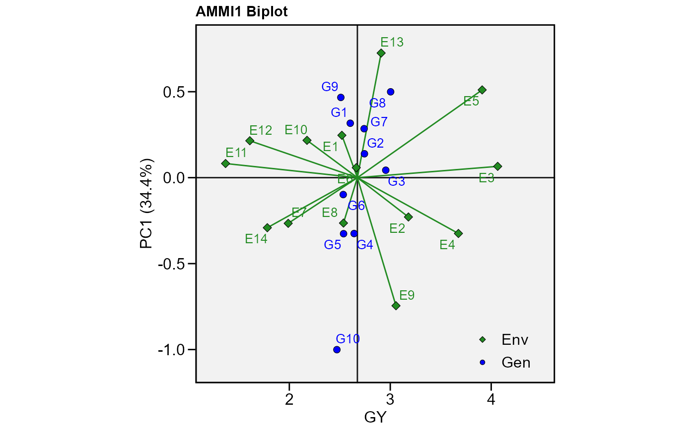
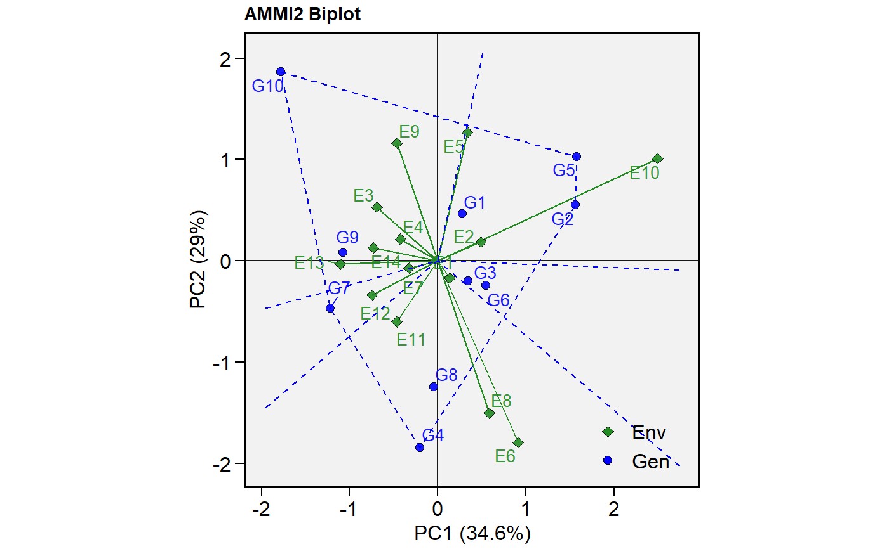
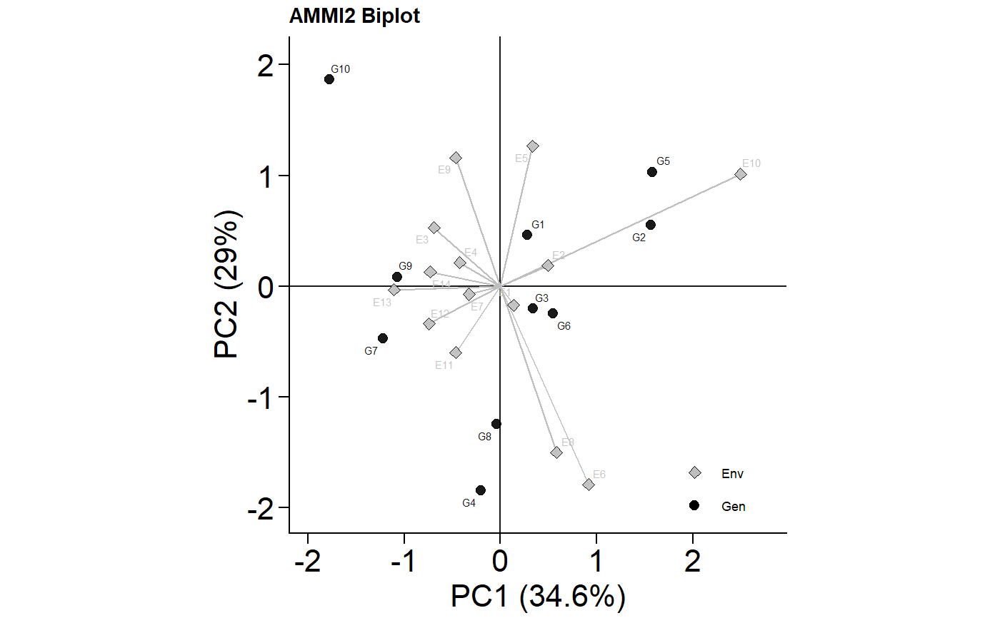

Plot scores of genotypes and environments in different graphical interpretations.
plot_scores( x, var = 1, type = 1, first = "PC1", second = "PC2", repel = TRUE, polygon = FALSE, title = TRUE, plot_theme = theme_metan(), axis.expand = 1.1, x.lim = NULL, y.lim = NULL, x.breaks = waiver(), y.breaks = waiver(), x.lab = NULL, y.lab = NULL, shape.gen = 21, shape.env = 23, size.shape = 2.2, size.bor.tick = 0.3, size.tex.lab = 12, size.tex.pa = 3.5, size.line = 0.5, size.segm.line = 0.5, col.bor.gen = "black", col.bor.env = "black", col.line = "black", col.gen = "blue", col.env = "forestgreen", col.alpha.gen = 0.9, col.alpha.env = 0.9, col.segm.gen = transparent_color(), col.segm.env = "forestgreen", repulsion = 1, leg.lab = c("Env", "Gen"), line.type = "solid", line.alpha = 0.9, resolution = 300, file.type = "pdf", export = FALSE, file.name = NULL, width = 8, height = 7, color = TRUE, ... )
Arguments
| x | An object fitted with the functions |
|---|---|
| var | The variable to plot. Defaults to |
| type | type of biplot to produce
|
| first, second | The IPCA to be shown in the first (x) and second (y)
axis. By default, IPCA1 is shown in the |
| repel | If |
| polygon | Logical argument. If |
| title | Logical values (Defaults to |
| plot_theme | The graphical theme of the plot. Default is
|
| axis.expand | Multiplication factor to expand the axis limits by to
enable fitting of labels. Default is |
| x.lim, y.lim | The range of x and y axes, respectively. Default is
|
| x.breaks, y.breaks | The breaks to be plotted in the x and y axes,
respectively. Defaults to |
| x.lab, y.lab | The label of x and y axes, respectively. Defaults to
|
| shape.gen, shape.env | The shape for genotypes and environments
indication in the biplot. Default is |
| size.shape | The size of the shape (both for genotypes and
environments). Default is |
| size.bor.tick | The size of tick of shape. Default is |
| size.tex.lab, size.tex.pa | The size of the text for labels (Defaults to 12) and plot area (Defaults to 3.5), respectively. |
| size.line | The size of the line that indicate the means in the biplot.
Default is |
| size.segm.line | The size of the segment that start in the origin of the
biplot and end in the scores values. Default is |
| col.bor.gen, col.bor.env | The color of the shape's border for genotypes and environments, respectively. |
| col.line | The color of the line that indicate the means in the biplot.
Default is |
| col.gen, col.env | The shape color for genotypes (Defaults to
|
| col.alpha.gen, col.alpha.env | The alpha value for the color for
genotypes and environments, respectively. Default is |
| col.segm.gen, col.segm.env | The color of segment for genotypes (Defaults
to |
| repulsion | Force of repulsion between overlapping text labels. Defaults to 1. |
| leg.lab | The labs of legend. Default is |
| line.type | The type of the line that indicate the means in the biplot.
Default is |
| line.alpha | The alpha value that combine the line with the background
to create the appearance of partial or full transparency. Default is
|
| resolution | The resolution of the plot. Parameter valid if
|
| file.type | The type of file to be exported. Valid parameter if
|
| export | Export (or not) the plot. Default is |
| file.name | The name of the file for exportation, default is
|
| width | The width 'inch' of the plot. Default is |
| height | The height 'inch' of the plot. Default is |
| color | Should type 4 plot have colors? Default to |
| ... | Currently not used. |
Value
An object of class gg, ggplot.
Details
Biplots type 1 and 2 are well known in AMMI analysis. In the plot type 3, the scores of both genotypes and environments are plotted considering the response variable and the WAASB, an stability index that considers all significant principal component axis of traditional AMMI models or all principal component axis estimated with BLUP-interaction effects (Olivoto et al. 2019). Plot type 4 may be used to better understand the well known 'which-won-where' pattern, facilitating the recommendation of appropriate genotypes targeted for specific environments, thus allowing the exploitation of narrow adaptations.
References
Olivoto, T., A.D.C. L\'ucio, J.A.G. da silva, V.S. Marchioro, V.Q. de Souza, and E. Jost. 2019. Mean performance and stability in multi-environment trials I: Combining features of AMMI and BLUP techniques. Agron. J. 111:2949-2960. doi: 10.2134/agronj2019.03.0220
See also
Author
Tiago Olivoto tiagoolivoto@gmail.com
Examples
# \donttest{ library(metan) # AMMI model model <- waas(data_ge, env = ENV, gen = GEN, rep = REP, resp = everything())#> variable GY #> --------------------------------------------------------------------------- #> AMMI analysis table #> --------------------------------------------------------------------------- #> Source Df Sum Sq Mean Sq F value Pr(>F) Proportion Accumulated #> ENV 13 279.574 21.5057 62.33 0.00e+00 . . #> REP(ENV) 28 9.662 0.3451 3.57 3.59e-08 . . #> GEN 9 12.995 1.4439 14.93 2.19e-19 . . #> GEN:ENV 117 31.220 0.2668 2.76 1.01e-11 . . #> PC1 21 10.749 0.5119 5.29 0.00e+00 34.4 34.4 #> PC2 19 9.924 0.5223 5.40 0.00e+00 31.8 66.2 #> PC3 17 4.039 0.2376 2.46 1.40e-03 12.9 79.2 #> PC4 15 3.074 0.2049 2.12 9.60e-03 9.8 89 #> PC5 13 1.446 0.1113 1.15 3.18e-01 4.6 93.6 #> PC6 11 0.932 0.0848 0.88 5.61e-01 3 96.6 #> PC7 9 0.567 0.0630 0.65 7.53e-01 1.8 98.4 #> PC8 7 0.362 0.0518 0.54 8.04e-01 1.2 99.6 #> PC9 5 0.126 0.0252 0.26 9.34e-01 0.4 100 #> Residuals 252 24.367 0.0967 NA NA . . #> Total 536 389.036 0.7258 NA NA <NA> <NA> #> --------------------------------------------------------------------------- #> #> variable HM #> --------------------------------------------------------------------------- #> AMMI analysis table #> --------------------------------------------------------------------------- #> Source Df Sum Sq Mean Sq F value Pr(>F) Proportion Accumulated #> ENV 13 5710.32 439.255 57.22 1.11e-16 . . #> REP(ENV) 28 214.93 7.676 2.70 2.20e-05 . . #> GEN 9 269.81 29.979 10.56 7.41e-14 . . #> GEN:ENV 117 1100.73 9.408 3.31 1.06e-15 . . #> PC1 21 381.13 18.149 6.39 0.00e+00 34.6 34.6 #> PC2 19 319.43 16.812 5.92 0.00e+00 29 63.6 #> PC3 17 114.26 6.721 2.37 2.10e-03 10.4 74 #> PC4 15 81.96 5.464 1.92 2.18e-02 7.4 81.5 #> PC5 13 68.11 5.240 1.84 3.77e-02 6.2 87.7 #> PC6 11 59.07 5.370 1.89 4.10e-02 5.4 93 #> PC7 9 46.69 5.188 1.83 6.33e-02 4.2 97.3 #> PC8 7 26.65 3.808 1.34 2.32e-01 2.4 99.7 #> PC9 5 3.41 0.682 0.24 9.45e-01 0.3 100 #> Residuals 252 715.69 2.840 NA NA . . #> Total 536 9112.21 17.000 NA NA <NA> <NA> #> --------------------------------------------------------------------------- #> #> All variables with significant (p < 0.05) genotype-vs-environment interaction #> Done!# GY x PC1 for variable GY (default plot) plot_scores(model)# PC1 x PC2 (variable HM) plot_scores(model, polygon = TRUE, # Draw a convex hull polygon var = "HM", # or var = 2 to select variable type = 2) # type of biplot# PC3 x PC4 (variable HM) # # Change size of plot fonts and colors # Minimal theme plot_scores(model, var = "HM", type = 2, first = "PC3", second = "PC4", col.gen = "black", col.env = "gray", col.segm.env = "gray", size.tex.pa = 2, size.tex.lab = 16, plot_theme = theme_metan_minimal())#>#>#>#>#> --------------------------------------------------------------------------- #> P-values for Likelihood Ratio Test of the analyzed traits #> --------------------------------------------------------------------------- #> model GY #> COMPLETE NA #> GEN 1.11e-05 #> GEN:ENV 2.15e-11 #> --------------------------------------------------------------------------- #> All variables with significant (p < 0.05) genotype-vs-environment interaction# GY x WAASB plot_scores(waasb_model, type = 3, size.tex.pa = 2, size.tex.lab = 16)# }